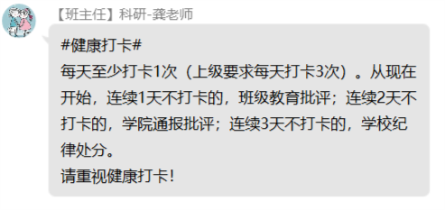
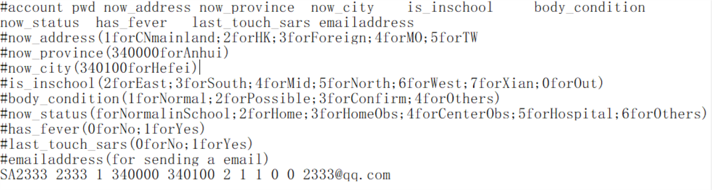
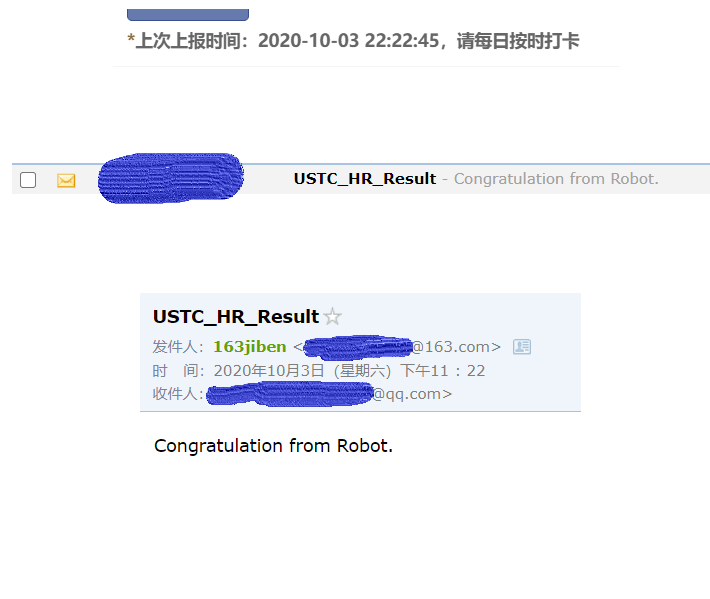

中科大自动健康上报，保姆级护航，支持邮件通知
博主从到校从未上报过，学校突然发布通知，再不上报，全校通报，批评处分，所以想要弄个自动上报的脚本。

提要
我们主要是实现两个功能，一个是报表提交，一个是定时发送requests。另外就是一些适配中科大“特色”的功能：网络自动连接，邮箱通知。
大部分包python都自带，需要额外安装的有
1
2
| pip3 install schedule
pip3 install requests
|
报表提交
通过抓包，发现健康上报主要是两个post，首先是登录账号，获取一个token，然后再用这个token配上其他参数，如：所在城市，健康状况，实现上报。
具体代码如下，我们把帐号密码等一系列参数放进一个usrpara.txt文档里，方便多个帐号一起读取。
usrpara.txt参考格式(#为注释)：

1
2
3
4
5
6
7
8
9
10
11
12
13
14
15
16
17
18
19
20
21
22
23
24
25
26
27
28
29
30
31
32
33
34
35
36
37
38
| def webreport(usrpara):
session = requests.session()
headers = {
'User-Agent':
'Mozilla/5.0 (Windows NT 10.0; Win64; x64) '
'AppleWebKit/537.36 (KHTML, like Gecko) '
'Chrome/85.0.4183.121 '
'Safari/537.36'
}
loginurl = 'https://passport.ustc.edu.cn/login?service=\
https%3A%2F%2Fweixine.ustc.edu.cn%2F2020%2Fcaslogin'
reporturl = 'https://weixine.ustc.edu.cn/2020/daliy_report'
username = usrpara[0]; password = usrpara[1]
logindata = {'username': username, 'password': password}
loginresponse = session.post(loginurl, headers = headers, data = logindata)
ini_token = re.search(r'<input type="hidden" name="_token" value=".*">', loginresponse.text).group(0)
token = ini_token[ini_token.find('value="') + len('value="') : -2]
reportpara = {
"_token":token,
"now_address":usrpara[2],
"gps_now_address":"",
"now_province":usrpara[3],
"gps_province":"",
"now_city":usrpara[4],
"gps_city":"",
"now_detail":"",
"is_inschool":usrpara[5],
"body_condition":usrpara[6],
"body_condition_detail":"",
"now_status":usrpara[7],
"now_status_detail":"",
"has_fever":usrpara[8],
"last_touch_sars":usrpara[9],
"last_touch_sars_date":"",
"last_touch_sars_detail":"",
"other_detail":""
}
reportrespone = session.post(reporturl, headers = headers, data = reportpara)
|
定时发送
这个比较简单，我们设置在每天12点执行一次上报，检测为200s，为了减少系统占有。
1
2
3
4
5
| def timereport():
schedule.every().day.at("12:00").do(main)
while True:
schedule.run_pending()
time.sleep(200)
|
连接网络通
由于中科大特别不人性的网络只能一台设备登陆。我们上报脚本一般放在实验室的机子上（放到不需要占用网络通的服务器，忽略这一步），如果我们在其他地方登陆了网络通，那么上报脚本就会因为没有网络失败。
所以我们需要一个在webreport之前先连接网络的def。
1
2
3
4
5
6
7
8
9
10
11
12
13
14
15
16
17
| def wltlogin():
rawurl = 'http://wlt.ustc.edu.cn/cgi-bin/ip'
cmd = 'login'
ip = 'yourip'
set = '%D2%BB%BC%FC%C9%CF%CD%F8'
name = 'your wlt name'
pwd = 'your wlt password'
wlturl = rawurl+'?'+'cmd='+cmd+'&url=URL&ip='+ip+'&name='+name+'&password='+pwd\
+'&savepass=on&set='+set
headers = {
'User-Agent':
'Mozilla/5.0 (Windows NT 10.0; Win64; x64) '
'AppleWebKit/537.36 (KHTML, like Gecko) '
'Chrome/85.0.4183.121 '
'Safari/537.36'
}
logindata = requests.post(wlturl, headers = headers)
|
邮件通知
当我们上报成功的时候，或者失败了，我们都希望脚本告诉我们。所以需要一个通知脚本。
准备
先准备好一个邮箱，开通POP3/SMTP服务（百度教程一堆），获取登陆码。了解邮箱的服务器啥的（百度一堆），以163邮箱为例。
代码
1
2
3
4
5
6
7
8
9
10
11
12
13
14
15
16
17
18
19
20
21
22
| def sendmail(emailaddress, flag):
from email.mime.text import MIMEText
from email.header import Header
mailhost = 'smtp.163.com'
neteasemail = smtplib.SMTP()
neteasemail.connect(mailhost,25)
account = '你的邮箱帐号'
pwd = '登陆码（非密码）'
neteasemail.login(account,password=pwd)
sender = '你的邮箱帐号@163.com'
receiver = emailaddress
if flag ==0:
content = 'Congratulation from Robot.'
else:
content = 'Sorry, something error today about your report, please contact the admin!'
message = MIMEText(content,'plain','utf-8')
subject = 'USTC_HR_Result'
message['Subject'] = Header(subject, 'utf-8')
message['From'] = '<你的邮箱帐号@163.com>'
message['To'] = "'<"+emailaddress+">'"
neteasemail.sendmail(sender, receiver, message.as_string())
neteasemail.quit()
|
收尾
最后整合一个main函数就行。完整参考代码见
Github链接
点个star呗(^-^)
效果图

Comments